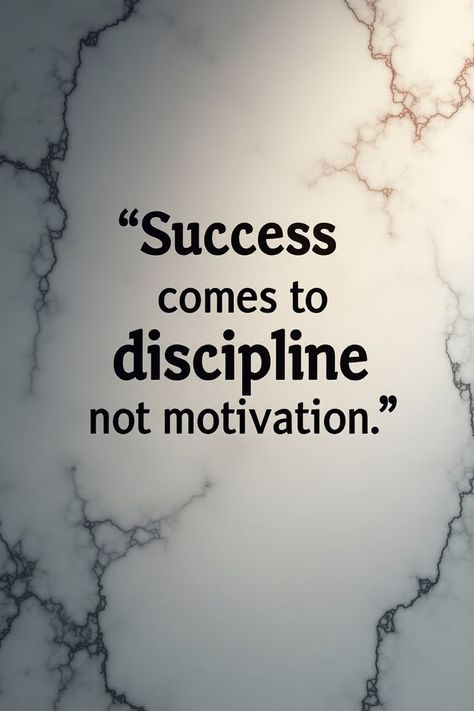

kavin infosis

“Success comes to discipline, not motivation.” The message explains that long-term success is achieved through consistent effort, self-control, and good habits rather than relying only on motivation. Motivation can be temporary—it comes and goes depending on mood or circumstances—but discipline helps a person stay focused and work regularly even when they don’t feel motivated. The simple background and bold text emphasize the seriousness of the message, reminding us that steady practice, commitment, and responsibility are more important than short bursts of enthusiasm when trying to reach goals.
website-creating-files.vercel.app